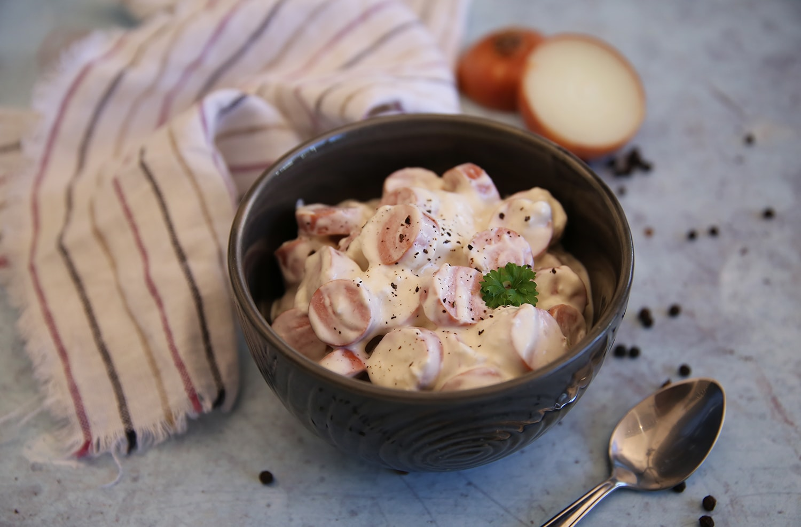

-
Töltött zsemlék fűszeres raguval
 Hozzávalók:
Hozzávalók:- 1.5 fej vöröshagyma
- 2 ek olaj
- 3 gerezd fokhagyam
- 2 dkg gyömbér
- 2 ek curry por
- 60 dkg marhalapocka
- 1 doboz darabolt paradicsom konzerv
- 2 dll húsleves alaplé
- 25 dkg natúr joghurt
- 2 db paradicsom
- 0.5 kígyóuborka
- 15 dkg sajt
- 4 db zsemle
- frissen őrölt bors
- só
Elkészítési idő:90 percAdag:4Elkészítés:Az olajat felforrósítjuk, és megpároljuk rajta az 1 fej finomra vágott vörös- és a zúzott fokhagymát, a lereszelt gyömbért és a curryport. Hozzáadjuk a megtisztított, falatnyi darabokra vágott húst, és kevergetve fehéredésig pirítjuk.
Hozzáadjuk a darabolt paradicsomot, majd felöntjük az alaplével. 60 percig főzzük, vagy addig, amíg a hús meg nem puhul. 25 dkg joghurttal gazdagítjuk. Sózzuk és borsozzuk, majd további 2 percig főzzük.
Összeforgatjuk a felaprított paradicsomot, uborkát és a fél fej hagymát. A zsemlékről egy kis kalapot levágunk, a belsejüket egy kiskanállal kiszedjük. A fűszeres raguval megtöltjük. Forrón, a zöldségekkel és sajttal megszórva kínáljuk.
-
LapcsánkaHozzávalók:
- 400 g burgonya
- 1 gerezd fokhagyma
- 100 g liszt
- 1 tk só
- bors
- 1 db tojás
- 1 csok snidling
- 1 kis pohár tejföl
Elkészítési idő:30 percAdag:4Elkészítés:A meghámozott burgonyát és a fokhagymát kis lyukú reszelőn lereszeljük. Hozzáadjuk a sót, ízlés szerinti borsot és a tojást, majd adagonként annyi lisztet, hogy lágy, kanállal szaggatható masszát kapjunk. Néhány percig pihentetjük.
Közben a tejfölös mártáshoz felaprítjuk a snidlinget, a tejfölhöz keverjük, és megsózzuk, megborsozzuk.
Serpenyőben olajat forrósítunk, és kanállal 6-8 cm átmérőjű lepényeket szaggatunk a tésztából a forró olajba. Közepes lángon aranybarnára sütjük mindkét oldalukat, majd papírszalvétára szedjük. A snidlinges tejföllel kínáljuk.
Áfonyás-fetás édeskrumpli falatokHozzávalók:- 2 db édesburgonya
- 15 dkg fetasajt
- 10 dkg aszalt áfonya
- 2 tk olívaolaj
- 0.5 tk kakukkfű
- só
- bors
- chilli pehely
- rukkola
- füge lekvár
Elkészítési idő:45 percAdag:12Elkészítés:Az áfonyás-fetás édeskrumpli falatokhoz legelőször a burgonyát megpucoljuk, aztán szeletekre vágjuk. A sütőt előmelegítjük 200 fokra, majd kibélelünk egy tepsit sütőpapírral. Ezután rátesszük a burgonyaszeleteket és kb. 25 perc alatt megsütjük.
A salátát megmossuk, majd egy tálba tesszük. Hozzáadjuk az olajat, az áfonyát, a szétmorzsolt fetát. Fűszerezzük, azttán belekerül a 2 evőkanál füge lekvárt. Végül minegyik sült édesburgonyaszelet tetejére halmozzunk a salátából.
VirslisalátaHozzávalók:- 1 fej vöröshagyma
- 4 ek cukor
- 1 dl ecet
- 1 dl víz
- 20 dkg tejföl
- 3 ek majonéz
- 1 ek mustár
- só
- bors
- 20 dkg virsli
- 4 ek nádcukor
Elkészítési idő:30 percAdag:4Elkészítés:A felaprított vöröshagymát összekeverjük a cukorral, az ecettel és a vízzel, összekeverjük, majd másfél órát pihentetjük.
A tejfölt összekeverjük a majonézzel és a mustárral, majd ízlés szerint megsózzuk, megborsozzuk.
A virslit a csomagoláson található utasítás szerint megfőzzük, hagyjuk kihűlni, majd felkockázzuk. A virslihez ezután hozzáadjuk a hagymás és a tejfölös keveréket. Átkeverjük, és tálalás előtt néhány órát hűtjük.
Héjában sült burgonya sajtkrémmelHozzávalók:- 8 db burgonya
- 2 ek olaj
- 10 dkg márványsajt
- 4 dkg vaj
- 20 dkg krémsajt
- 1 gerezd fokhagyma
- só
- 2 szál snidling
Elkészítési idő:45 percAdag:8Elkészítés:A burgonyát alaposan megmossuk, majd félpuhára főzzük. Kivesszük, lecsepegtetjük, kereszt alakban bevágjuk. Az olajjal átkenjük, és 180 fokos sütőben teljesen puhára sütjük.
A márványsajtot tálba reszeljük, hozzáadjuk a vajat és a krémsajtot. Zúzott fokhagymával és kevés sóval ízesítjük.
A keveréket habzsákba tesszük, és a sült burgonyán ejtett vágásba nyomjuk. Végül a snidlinget apróra vágjuk, és meghintjük vele a krémsajtos burgonyákat.